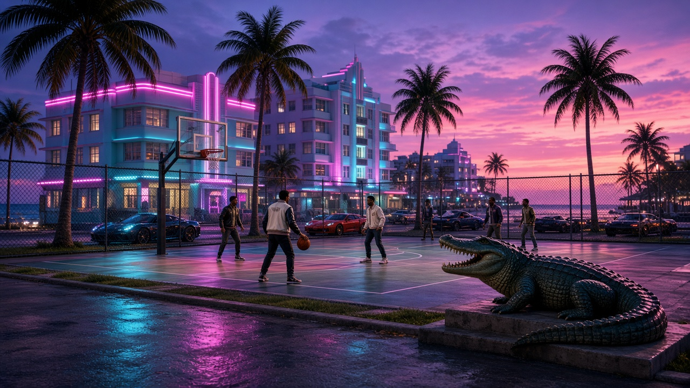

Today's news
Is There a GTA 6 Crossover in NBA 2K27? | Peekhole

Short answer: Yes. NBA 2K27 Season 3 is a Vice City takeover that went live on November 27 and runs until January 15 (11AM ET). It is the first time Rockstar and 2K have teamed up like this, and the action happens inside NBA 2K27, not inside GTA 6 itself.
What is in the NBA 2K27 Vice City season?
- A Vice City park: The City hub gets beach courts, pastel neon hotels, supercars on the streets and a statue of Macca the Gator.
- Sahara Arena: It replaces the usual NBA Arena for the season as the home of Vice City's team.
- Events: Conquer Leonida, Vice Run, and Neon vs Noir, a 5v5 game of Vice City against Los Santos. Wearing the Rockstar collab gear earns double REP on Wednesdays.
- Outfits: Vice City and Los Santos jerseys, a Vice City varsity jacket, and Burger Shot and Cluckin' Bell work uniforms for your player.
Is there a special edition?
Yes. The NBA 2K27 Vice City Edition has Miami HEAT center Bam Adebayo on the cover. 2K also says GTA+ members get bonuses and access to NBA 2K27 as part of the deal.
Are players happy about it?
Mixed. Some fans on X love the beach-court look, while others pushed back on the update. Either way, pink-and-teal hoops are now a thing.
Sources
- 2K Newsroom: Vice City Comes to NBA 2K27 in Season 3
- NBA 2K27: Season 3 Courtside Report
- The Verge: NBA 2K27 is getting a GTA VI-themed crossover
Peekhole take: Vice City finally has a home team. Somebody tell Jason his jump shot needs work.